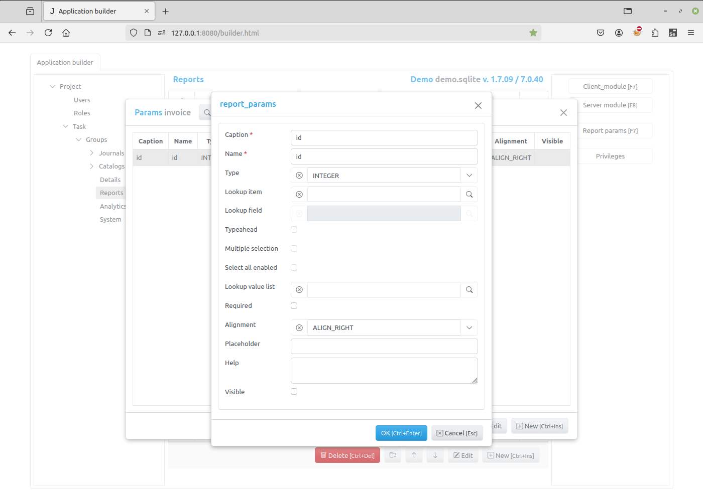
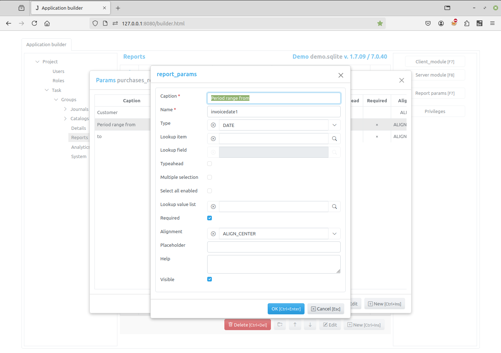
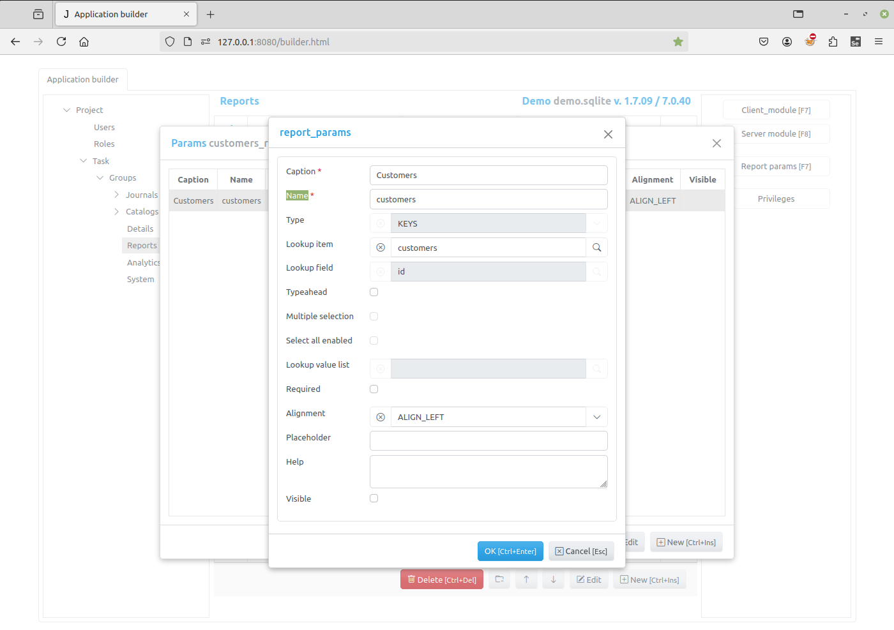
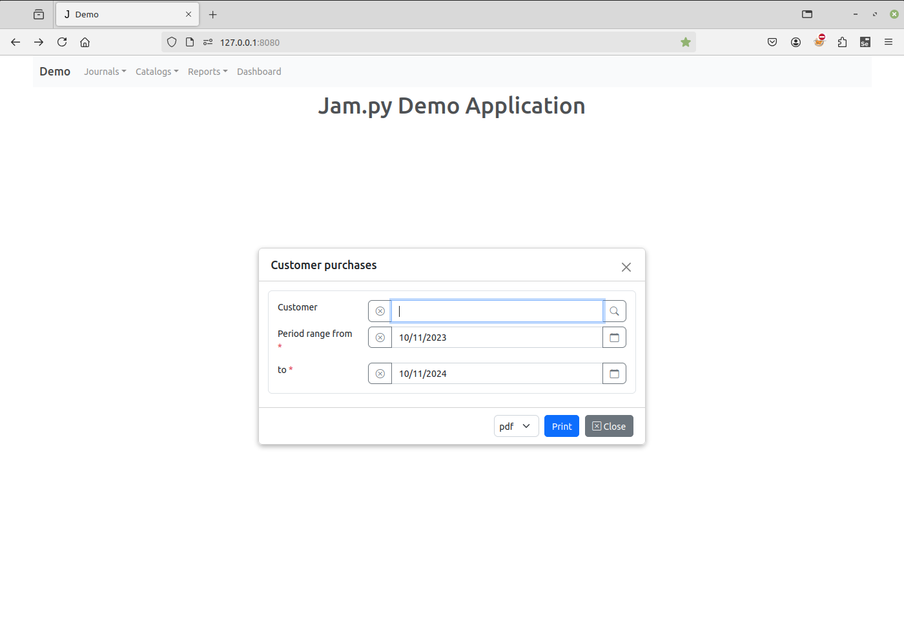

Report parameters¶
You can specify the parameters of the report. For example, the Customer purchases report of the Demo project has three parameters.
To add or change a report parameter click Report params button in the left panel of the Application builder. A form will appear displaying the list of existing parameters. Then click New or Edit button of the form to add or change the parameter.
The below can be specified:
Caption - the name of the parameter that appears to users
Name - the name of the parameter will be used in programming code to get access to the parameter object.
Type - the data type of the parameter
Lookup item - the item to select the parameter value from
Lookup field - the field in the lookup item
Typeahead - autocompletion/typeahead is enabled for the lookup field.
Multiple selection - Multiple selection is enabled.
Select all enabled - Select all is enabled.
Lookup value list - Lookup value list selection.
Required - if this checkbox is checked and Visible attribute is set, the client application will require a users to specify the parameter value before printing the report
Alignment - specifies how a value of the parameter will be aligned in the input element
Placeholder - use this attribute to specify the placeholder that will be displayed by the field input.
Help - if any text / html-message is specified, a question mark will be displayed to the right of the input, so when the user moves the mouse pointer over this mark, a pop-up window appears displaying this message.
Visible - the client application creates a form to specify the parameters before printing the report. If this checkbox is checked, the input element for this parameter will appear in the form
It it possible to create a lookup parameter. For example, the Customer purchases report has a Customer parameter that can be selected from Customers catalog:
In this case we should specify:
Lookup item - the item to select the parameter value from
Lookup field - the field in the lookup item
Form for setting the parameters of Customer purchases report is as follows:
